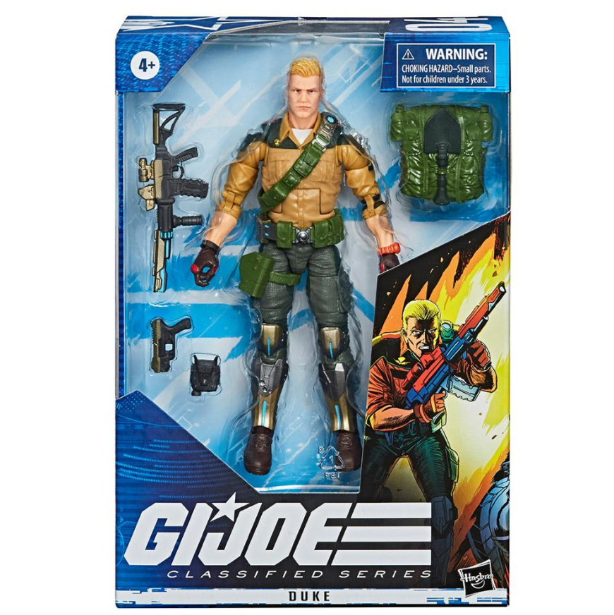

Every model we deliver starts as the physical product on our scanner.
Explore the possibilities. View on your phone for the full AR experience.

Photogrammetry Reconstruction.
View in your spaceWe pick the products with the most to gain from 3D: the ones people want to turn over before they commit. You point them out, we plan the shoot.
Our team captures the real product in detail, at our studio or on your site.
That capture becomes a clean, accurate 3D model, tuned to load fast on any phone.
You get a link and a QR code, ready for a shelf, a table, or your website. Customers point their camera and it's there.
Let a customer turn your product over at real size and the pricier option stops feeling like a gamble. They reach for it because they already know what they're getting.
A customer who has set your product on their own table knows exactly what will arrive. The expectation is set before the sale, so far fewer products get returned.
AR is the kind of thing people record and send to a friend. Every share puts your product in front of someone new. Effectively free marketing at no extra cost.